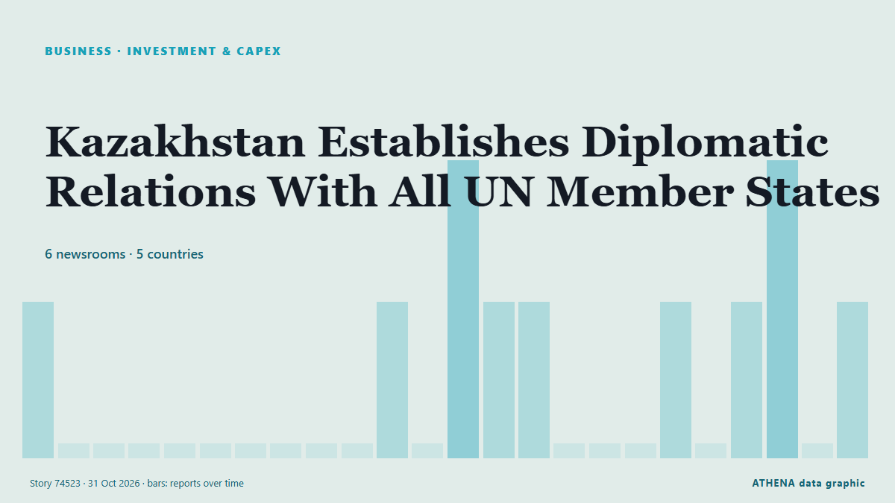

Investitionen
| 18. Okt. | 0 |
|---|---|
| 19. Okt. | 0 |
| 20. Okt. | 0 |
| 21. Okt. | 0 |
| 22. Okt. | 0 |
| 23. Okt. | 1 |
| 24. Okt. | 2 |
| 25. Okt. | 0 |
| 26. Okt. | 7 |
| 27. Okt. | 3 |
| 28. Okt. | 2 |
| 29. Okt. | 6 |
| 30. Okt. | 1 |
| 31. Okt. | 0 |
Schlagzeilen werden auf Englisch angezeigt, wie veröffentlicht.

Kazakhstan Establishes Diplomatic Relations With All UN Member States
The Astana Times provides news and information from Kazakhstan and around the world. von The Astana Times
CM Maryam assures LCCI of full support for industrialization, business growth
LAHORE: Punjab Chief Minister Maryam Nawaz Sharif on Monday offered technical assistance to the federal government for digitising business processes, as a special committee led by Prime Minister’s… von Business Recorder
SMEDA leads historic event to connect SMEs across 57 OIC member states
LAHORE: The Small and Medium Enterprises Development Authority (SMEDA) has taken a major step towards connecting businesses across 57 member states of the Organisation of Islamic Cooperation (OIC)… von Business Recorder
Sentier Advent Calendar 2026: The cherry perfume that wins me compliments every time
The rich, woody fragrance stood out from the Sentier Advent Calendar and I’m now ready to invest in a full-size bottle. von The Scotsman
FG prioritises local production to create jobs, boost prosperity
Nigeria needs local AI solutions to boost energy competitiveness – Experts By Tosin Kolade Nigerian energy experts have called for investment in locally developed Artificial Intelligence (AI)… von News Agency of Nigeria
Stars set to light up Omuthiya
It’s going to go down at Omuthiya this weekend. von The Namibian
Morocco tops South Africa in RMB continental investment ranking
Morocco overtook South Africa to become the continent’s fourth-most attractive investment destination as years of industrialisation and faster growth propelled it ahead of the region’s biggest… von Club of Mozambique
Namibia: Namibia Seeks Jobs, Investment From Russia Ties
[New Era] Moscow -- President Netumbo Nandi-Ndaitwah will seek investment, job creation and technology transfer when she attends the Russia-Africa Summit in Moscow this week, as Namibia looks to turn… von AllAfrica
Lankan High Commission holds trade and investment engagements in London and Dover
UK–Sri Lanka Trade and Investment Forum underway Sujeeva Nivunhella reporting from London The Sri Lanka High Commission in the UK organised a series of trade and investment engagements in London and… von The Island
Developers turn to government housing program amid condo slump
Real estate developers’ growing participation in government-backed housing programs could help revive sales and expand affordable homeownership, even as the… von Daily Tribune
China’s CXMT Pushes Ahead With AI Memory Despite Low Yields
China’s largest memory-chip maker plans to begin limited production of advanced artificial intelligence memory within the next two months, even though only 20% to 30% of its chips reportedly meet… von Colombia One
Range Rover GT to target 80 per cent conquest buyers as luxury brand eyes market expansion
New electric GT will take Range Rover brand into a new market. von The Irish News (Belfast)
Govt working to simplify business regulations, attract investment: Haroon Akhtar Khan
ISLAMABAD: The government has decided to accelerate business reforms by removing 70–75 percent of unnecessary regulations and federal cabinet has approved 170 amendments to the Companies Act, 2017… von Business Recorder
PM seeks Japanese investment in energy, technology, infrastructure
Leaders in Lango have asked Japan to support irrigation, farm mechanisation, schools, healthcare and industrial development, citing poor harvests, infrastructure gaps and youth unemployment across… von Nile Post
Login issues for some Revolut users resolved
Revolt has said a "short technical issue" with its app, which meant some customers were unable to log in, has now been resolved. von RTÉ News
Azerbaijan’s industrial shift creates opening for German manufacturers
Azerbaijan’s next phase of economic development will increasingly depend on its ability to transform domestic resources into higher-value products, strengthen manufacturing capabilities and expand… von AzerNews
OP-ED: Why SA must invest in young people’s mental health sooner rather than later
Delaying accessible, preventative mental health and psychosocial support carries costs across education, employment, families, communities and the economy. von Daily Maverick